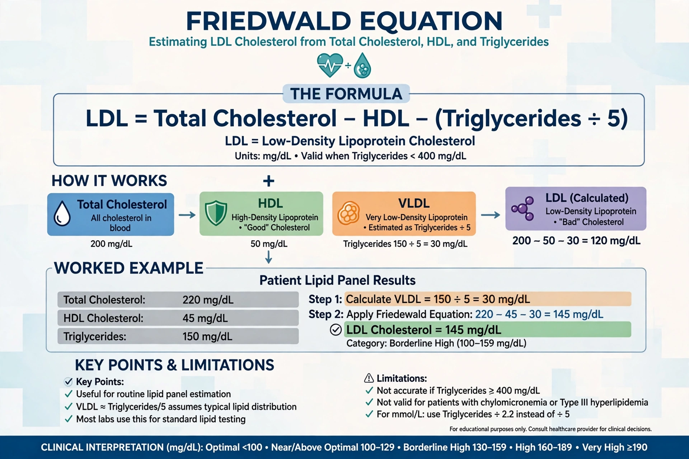

| Friedewald equation | |
|---|---|
 | |
| Estimates | LDL cholesterol |
| Published | 1972, Friedewald, Levy & Fredrickson |
The Friedewald equation is a formula for estimating low-density lipoprotein cholesterol (LDL-C) from a standard fasting lipid panel, avoiding the need for ultracentrifugation. It was published in 1972 by William Friedewald, Robert Levy, and Donald Fredrickson.
In mg/dL: LDL-C = Total cholesterol − HDL-C − (Triglycerides / 5). The triglycerides/5 term estimates VLDL cholesterol, assuming a fixed ratio of triglyceride to cholesterol in VLDL. In mmol/L, the divisor is approximately 2.2.
The equation is invalid when triglycerides exceed 400 mg/dL (4.5 mmol/L), in non-fasting samples, and in type III hyperlipoproteinemia. It systematically underestimates LDL-C at low LDL and high triglyceride levels. Newer methods — the Martin-Hopkins and Sampson equations — use adjustable factors. Direct measurement of ApoB or LDL-C is preferred in such cases.
Estimated LDL-C guides management of coronary artery disease risk, alongside HDL and total cholesterol.